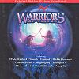

Celtic Lyrics Corner > Artists & Groups > Clannad > Warriors Of Virtue
|  |
Warriors Of Virtue
(1997) |
| Tracks : |
1. You Can Fly
2. A Beautiful Morning 3. Forces Of Nature 4. Inside Of You 5. Tennessee Plates 6. In A Dream 7. When You Go 8. Alembic 9. Song Of The Seas 10. The Land Of Tao 11. The Rooz Encountered 12. Five As One 13. Ryan's Return |